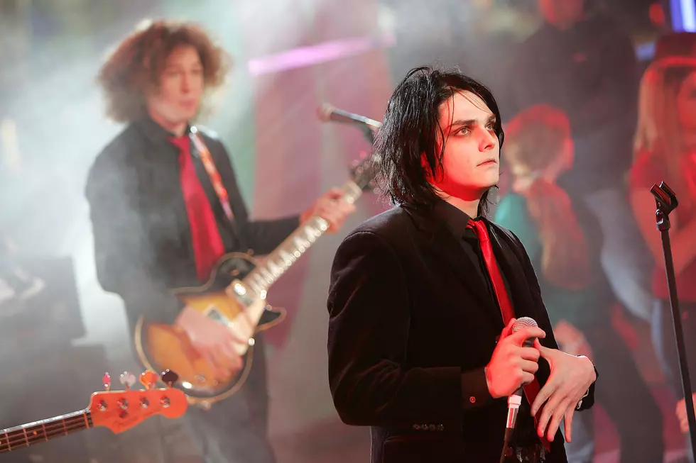

Gerard Way
Vocalista & Fundador
2001 - 2013 / 2019 - presente

A mente por trás de tudo. Gerard Way fundou a banda dias após assistir ao colapso das Torres Gêmeas ao vivo pela TV — o trauma que transformou em catarse coletiva para milhões. Sua voz abrange um range dramático e operístico, e sua presença de palco é teatral, quase litúrgica. Fora da música, criou "The Umbrella Academy", a graphic novel que virou série de sucesso na Netflix.
"Nada me deu mais satisfação do que escrever músicas que fizeram pessoas se sentir menos sozinhas."